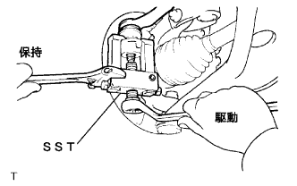
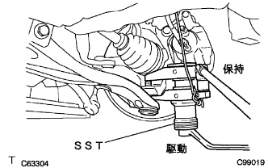
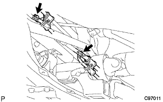
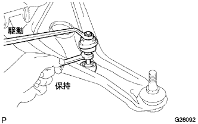

スタビライザ バー FR（4WD） 取り外し |
参照| 1. フロントタイヤ取りはずし |
| 2. タイロッド エンドSUB-ASSY LH切り離し |
|  |
コッターピンおよびキャッスルナットを取りはずす。
SSTを使用して、タイロッドエンドLHをステアリングナックルから切り離す。
| 3. タイロッド エンドSUB-ASSY RH切り離し |
| 4. フロントサスペンション アームSUB-ASSY LWR NO.1 LH切り離し |
クリップをはずし、キャッスルナットを取りはずす。
|  |
SSTを使用して、ロワーアームNo.1をステアリングナックルアームから切り離す。
| 5. フロントサスペンション アームSUB-ASSY LWR NO.1 RH切り離し |
| 6. プレッシャフィード チューブASSY切り離し |
|  |
ボルト2本をはずし、ラック＆ピニオンタイプパワーステアリングギヤASSYからプレッシャフィードチューブASSYを切り離す。
| 7. フロントスタビライザ ボルト取りはずし |
フロントスタビライザボルトをスパナ（10mm）で固定し、ナット2個を取りはずす。
フロントスタビライザバークッションリテーナNo.1を4個、フロントスタビライザクッション4個、フロントスタビライザバークッションリテーナNo.2およびフロントスタビライザボルトを取りはずす。
|  |
反対側も同様の手順で取りはずす。
| 8. スタビライザ バー FR取りはずし |
ボルト4本をはずし、フロントスタビライザブラケットNo.1 LHおよびRHを取りはずす。
左右のフロントスタビライザバーブシュNo.1をスタビライザバーから取りはずす。
フロントスタビライザバーを車両右側から取りはずす。